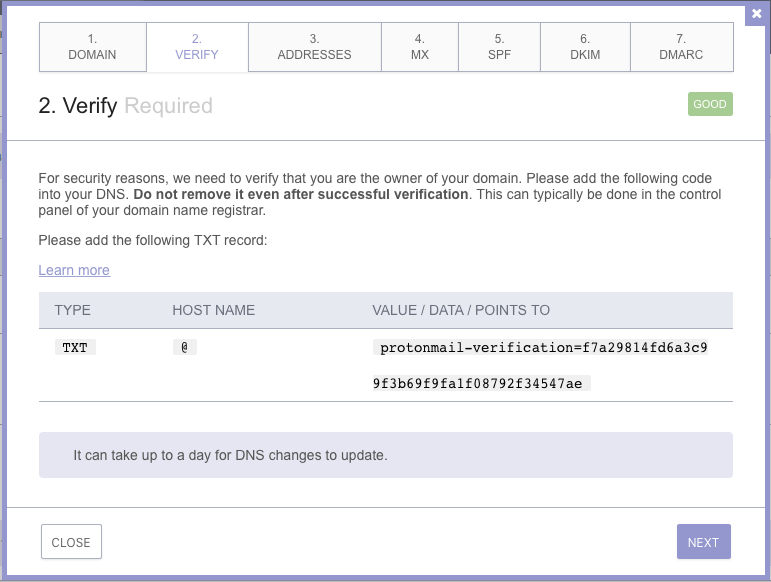
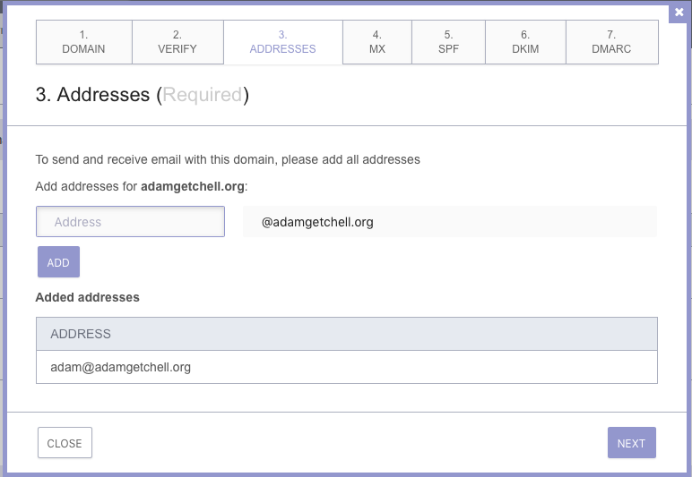
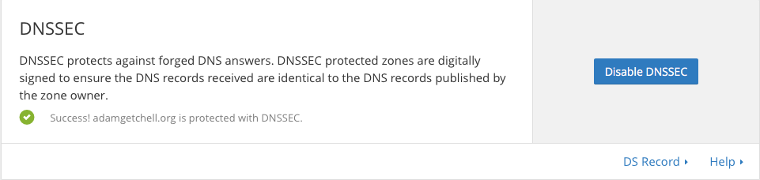

For awhile, I’ve been interested in establishing a secure, verifiable, public identity.
There are any number of reasons to do this, for example, authenticity and non-repudiation, frictionless sharing of files, and so forth. But that’s the topic of another article. What I want to talk about here is how I got to the promised land.
First up is Keybase, which is a really awesome software stack that maps your identity to your public keys. You might want to read about it. Go ahead, I’ll wait.
Signup is currently by invite only, but if you know someone already on it you might be able to wrangle an invite.
When you do sign up, they’ll ask for an email address. Of course, we all know that email is notoriously insecure, subject to spamming, ad-analytics, and any number of security maladies, but I didn’t want to bow to that (seeming) inevitability.
As it turns out, this was the perfect opportunity to use another highly secure service I’d been playing with: ProtonMail.
ProtonMail has encrypted identities in order to retrieve your data, is housed in Switzerland (so certain entities won’t obtain access easily), is encrypted again with your own key which ProtonMail doesn’t know so that they cannot access your data even if certain entities force them to hand it over, has mobile app versions, and implements all the right sorts of technologies to patch up the leaky sieve of general purpose electronic correspondence while still remaining useful to non-Sendmail-grognards.
Now, if I’m going to bother to have a vanity domain like adamgetchell.org, I may as well have an email address like adam@… So while the free version of ProtonMail is fine for tinkering, I stepped up to a paid account in order to get these and other features, as we’ll go over shortly. For $48 per year, not too bad, and I felt good about supporting them.
The next step towards greater email security is to verify you own your domain.
My domain registrar is Joker, a fine German domain registrar also housed in Switzerland (seeing a theme?) that runs me about $12/year. ProtonMail provides a nice wizard to step you through everything, so from that:

You go to your DNS registrar and add the requested TXT record. Validate it.
Next, you’ll need to add the MX record for your vanity domain, with the data
that ProtonMail supplies. There’s a pretty screenshot I could show, but data is
rather trivial: set up an MX record, with a value of mail.protonmail.ch and a
priority of 10, and you’re good to go. Give it some time to propagate through
DNS-land; eat lunch, or have some coffee, or play your favorite game for a tick
or two.
Now you can just add the address in ProtonMail’s Wizard (Settings->Domains)

Alright, vanity email address, \(\checkmark\). Now it’s time to secure it.
You don’t want someone to be able to fake your brand new domain. This is where DNSSEC comes in. However, in my case, Joker‘s DNS servers don’t support it. No problem — switch to someone who does!
That someone is CloudFlare.
CloudFlare is a cool service that boosts your website speed via optimizations and CDNs, helps protect your website against some forms of malicious attacks, and can even mitigate DDoS.
In this case, I’m interested in them because they provide fast, secure DNS, and because I can get a free account for my single website. What’s not to like?
I also highly recommend them in general. I’ve used them for a number of years professionally, and they’ve been worth the cost.
On Joker I can specify the CloudFlare will be my DNS server like so:

A helpful wizard will pop up telling you that you’re about to transfer records over, which you should do. (Actually, I turned on DNSSEC much later in the process than what I’m writing here. Thus, most of my DNS changes were actually made on Joker’s DNS servers, then migrated over to CloudFlare. That worked just fine.)
Once you’ve verified that CloudFlare is now handling your DNS, it’s a simple matter to switch on DNSSEC:

Now, back to email! Just like we don’t want someone to spoof our domain, we don’t want to someone to spoof emails. Time for DKIM, SPF, and DMARC.
ProtonMail has a fantastic guide to setting up Anti-spoofing for Custom Domains. Again, I’ll wait while you read it.
Whew! That was a long detour, but we finally have a secure email address to use for Keybase.

Once you’ve installed Keybase (e.g. brew cask install keybase), you’ll want to
note down your ‘paper’ key someplace safe (like, say, a Secure Note in
1Password). And then, you’ll want to start adding identities, such as
Twitter, GitHub, Reddit, and your website.
This is pretty straightforward; you sign objects with your public key and post them someplace public on that service (e.g. a tweet, gist, post, or static file).
For example, here’s my GitHub proof:
The neat thing about Keybase is that you don’t need a central server to verify someone’s identity: you can do it yourself right from the command line:
Now, if you want your website to be part of your identity, you’ll want it to be
secure. My website happens to be generated by Pelican and hosted on
GitHub, for which I have 2-factor authentication turned on. But by default,
GitHub hosted sites only support SSL for *.github.io domains.
CloudFlare does, sorta. So we come to the second reason for
using CloudFlare: enabling https on your static, custom domain. It’s as easy
as flicking a switch:

HOWEVER this is not complete; it only encrypts communication between the client browser and CloudFlare. The connection between CloudFlare and GitHub is unencrypted for custom domains. It is also easy to do the wrong way.
If you didn’t have a custom domain, then this doesn’t apply. But where’s the fun in that?
Finally, to prevent the client from downgrading from https to http, you can
turn on HTTP Strict Transport Security (HSTS).

This comes with some sizeable caveats, so definitely read them.
At last, you can check your work here: https://en.internet.nl.
And now, finally, you have a nice, secure, publicly verifiable identity:

Update
Here are two videos from CloudFlare on boosting site speed and security: